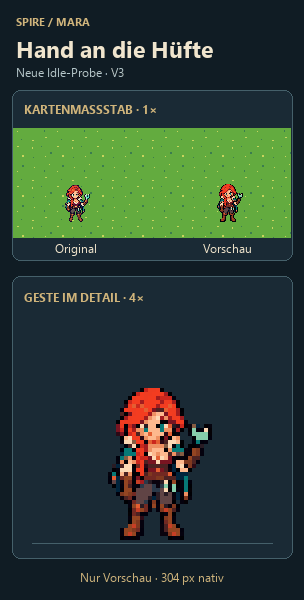

Mara · Hand an die Hüfte
Eine klare Arm-Silhouette mit ruhiger Gewichtsverlagerung. Neue Idle-Vorschau.

GIF speichernPosen einzeln ansehen
Vier Posen, Hin- und Rückweg, 2,87 Sekunden. Nur Vorschau. Ilyra und Speer-Tanz unverändert.
Eine klare Arm-Silhouette mit ruhiger Gewichtsverlagerung. Neue Idle-Vorschau.

GIF speichernVier Posen, Hin- und Rückweg, 2,87 Sekunden. Nur Vorschau. Ilyra und Speer-Tanz unverändert.